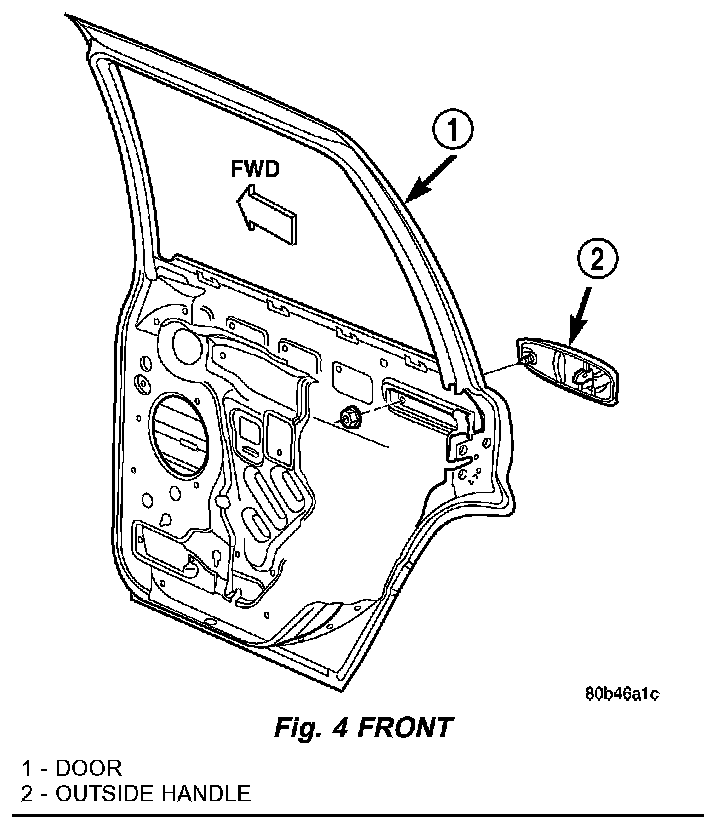

Rear Door Exterior Handle: Service and Repair
EXTERIOR HANDLEREMOVAL
1. Remove door trim panel and waterdam.
2. Locate glass to full up position.
3. Disconnect exterior handle to latch rod.
Fig. 4:

4. Remove fasteners attaching exterior handle to door (Fig. 4).
5. Remove exterior handle from door.
6. Separate exterior handle from vehicle.
INSTALLATION
1. Position exterior handle in door.
2. Install fasteners attaching exterior handle to door (Fig. 4).
3. Connect exterior handle to latch rod.
4. Locate glass to full down position.
5. Install waterdam and door trim panel.